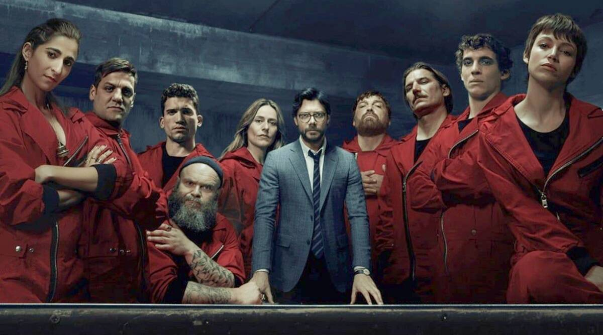
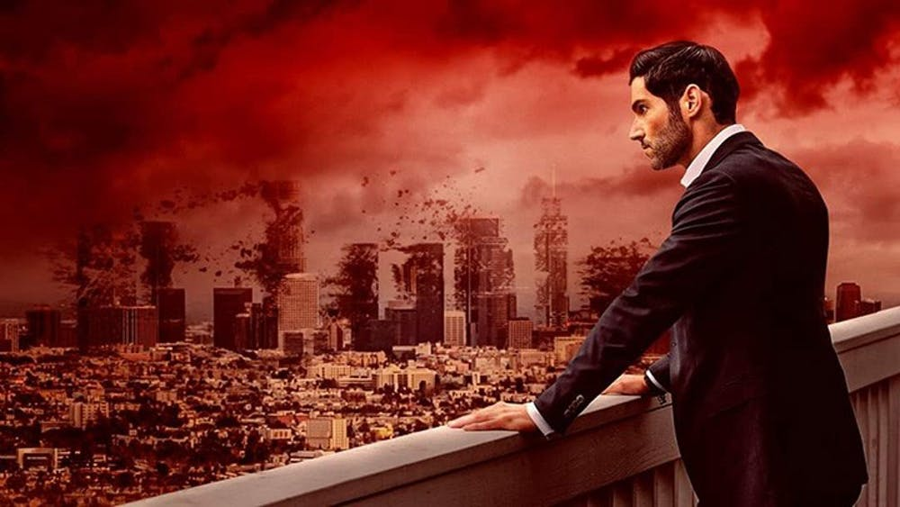
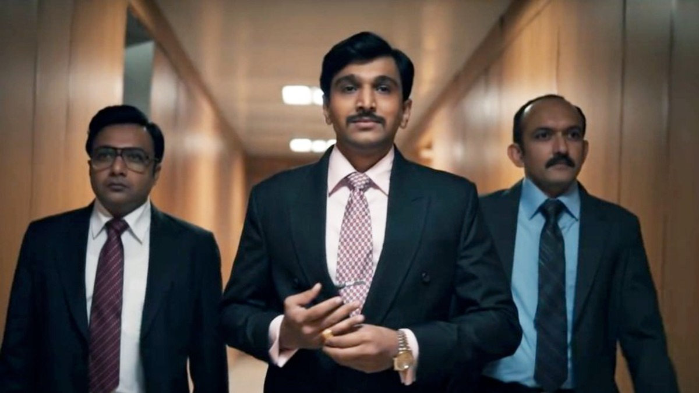
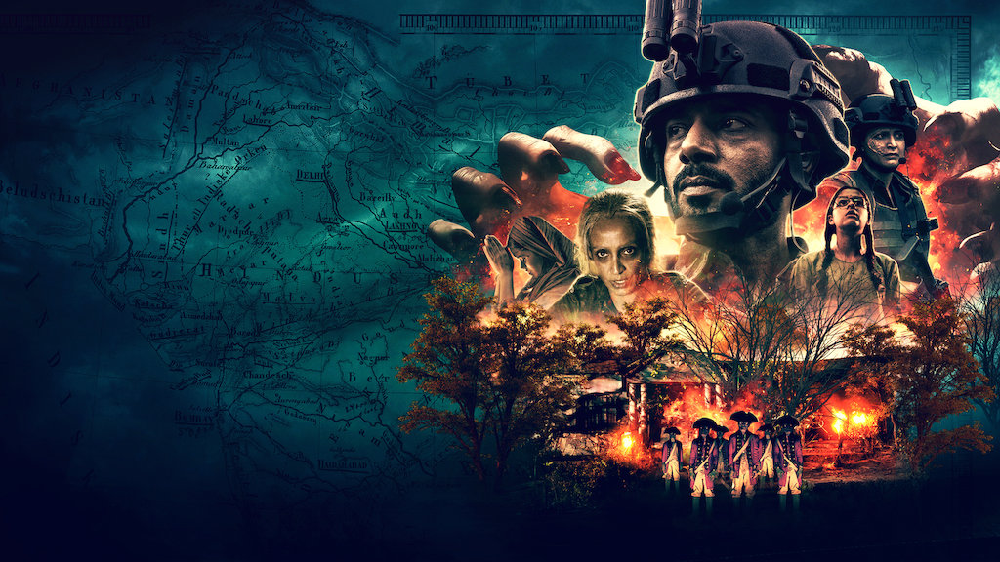
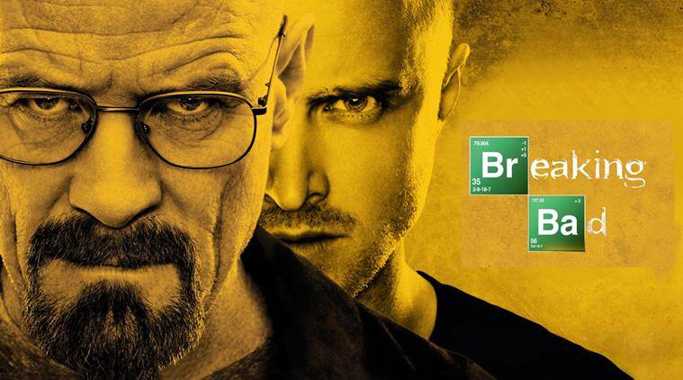
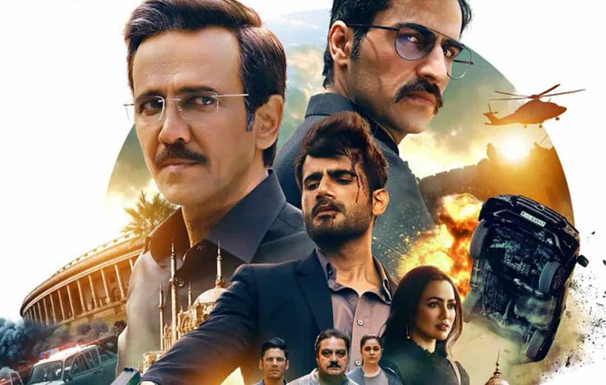
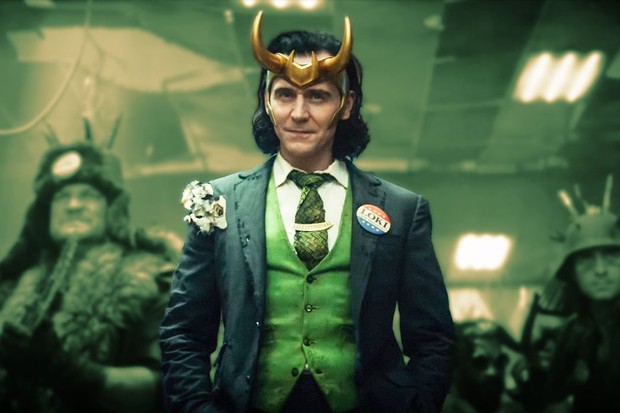

1. Money Heist

Eight thieves take hostages and lock themselves in the Royal Mint of Spain as a criminal mastermind manipulates the police to carry out his plan.The consequences of Light’s actions will set the world ablaze.
2. Lucifer

Bored with being the Lord of Hell, the devil relocates to Los Angeles, where he opens a nightclub and forms a connection with a homicide detective.
3. Scam 1992

'Scam’ is about the major scandals that shook India and are remembered as some of the most notorious crimes of the country. Set in 1980’s and 90’s Bombay, Scam 1992 follows the life of Harshad Mehta - the infamous “Bachchan of BSE”. It was a rags-to-riches story till financial journalist Sucheta Dalal exposed Harshad as the man behind India’s biggest financial scam. After his arrest, the stock market crashed and countless Indians lost all savings. For the first time, the CBI was compelled to launch an investigation into a financial crime. A corrupt financial system was revealed. Harshad eventually died in custody.
4. Betaal

Hired to displace tribal villagers to make way for a new highway, officials unearth an old curse and an army of British soldier-zombies.
5. Mirzapur

The iron-fisted Akhandanand Tripathi is a millionaire carpet exporter and the mafia don of Mirzapur. His son, Munna, is an unworthy heir who will stop at nothing to inherit his father’s legacy. An incident at a wedding forces him to cross paths with Ramakant Pandit, an upstanding lawyer, and his sons, Guddu and Bablu. It snowballs into a game of ambition, power and greed in this lawless city.
6. Game of thrones

Set on the fictional continents of Westeros and Essos, Game of Thrones has a large ensemble cast and follows several story arcs throughout the course of the show. The first major arc concerns the Iron Throne of the Seven Kingdoms of Westeros through a web of political conflicts among the noble families either vying to claim the throne or fighting for independence from whoever sits on it. A second focuses on the last descendant of the realm's deposed ruling dynasty, who has been exiled to Essos and is plotting to return and reclaim the throne. The third follows the Night's Watch, a military order defending the realm against threats from beyond Westeros's northern border.
7. Breaking bad

A high school chemistry teacher diagnosed with inoperable lung cancer turns to manufacturing and selling methamphetamine in order to secure his family's future.
8. The Flash

After being struck by lightning, Barry Allen wakes up from his coma to discover he's been given the power of super speed, becoming the next Flash, fighting crime in Central City.
9. Special Ops

The series follows Himmat Singh (Menon) of Research and Analysis Wing who draws similar patterns in terrorist attacks and is convinced a single person is behind all the attacks. His task force team of five agents living in various parts of the world aim to catch the mastermind. The story is inspired by several espionage missions undertaken by India in the last two decades.
10. Loki

The mercurial villain Loki resumes his role as the God of Mischief in a new series that takes place after the events of “Avengers: Endgame.”